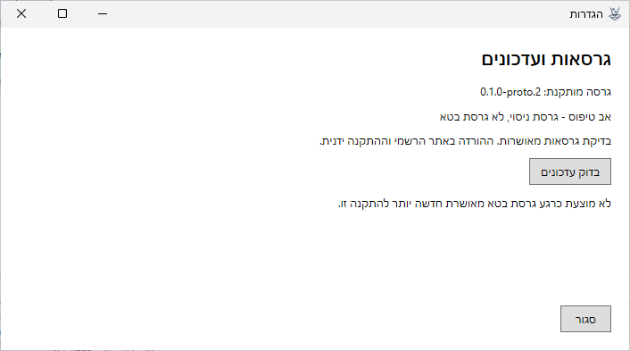

User guide
guide Start-app
Step by step in version 0.1.0-proto.2: creating a workspace, adding items, capture, launch and save - with real app screenshots and the limitations worth knowing.
Evaluation prototype, not a stable release
Guide version: 0.1.0-proto.2
No chapters found. Try another word or clear the search.
what is it Start-app
Start-app Saves programs, folders, files and links under one environment name. The next time you open the computer, the "Run" command opens all the items together, without selecting each one again.
This guide describes version 0.1.0-proto.2 and follows the whole flow: the main screen, creating a workspace, adding items manually or by capture, editing, launching and saving. Chapter Known limitations Centralize in one place everything that the application does not do.
System and installation requirements
The packaging target is Windows x64. There is no verified Mac or Linux version.
The download of the version this guide describes, 0.1.0-proto.2, is in the versions list on the home page, with the version number, file size and its sha256 for checking before installation. The download happens only there, not from the guide page.
Activation after download
The download is a ZIP file, not an installer. After downloading:
- Extract all the files from the ZIP to a folder.
- Run
Start-app.exein the main folder. - Keep the folder
Appnext to the file, and always move the whole folder together.
The application includes its runtime environment, so there is no need to install .NET separately. No registration, account or login. The data is saved to a local file in%LOCALAPPDATA%\StartApp\store.json.
What was tested: This prototype was built as a standalone Windows x64 application, and successfully started and shut down on a hosted Windows Server 2025 server. Not independently tested on home Windows 11, and there is no minimum Windows version commitment. There is no guarantee that security warnings or antivirus software alerts will not appear.
Version update
Update checking is done from the app's settings screen, and only approved versions are offered there. The download is from the official site and installation is manual: there is no automatic update.

The main screen: the environment view
At the top of the screen is the list of environments. Each environment card shows its name, description, category, selected color and card image, creation time and last opened time. The last opened timestamp is updated when you launch an environment, not when you open an individual item.
Each card has an adjacent "Launch" button. Right-clicking the card, or Shift+F10 on the keyboard, opens an actions menu: Show, Launch, Add item, Design card and Edit category. Below the list is a form for creating a new workspace, and in the corner an entry to the capture screen.


Creating a new work environment
In the creation form, Name is a required field. The default category is "General", and you can choose a color and a card image. Description is optional.
Adding items manually
In the environment details screen, add items of four types: site, file, folder and software. Each item can be given your own name and description. Local paths require a full Windows path, not a short software alias.
Items are grouped on screen by type: sites, folders, files and programs. Each row has an adjacent "Edit" button.

The "Choose existing workspaces" button adds to the workspace an item already saved in another workspace: choose a type, search and pick.

Capture: scanning, selection and duplication
The capture scans what is open now: programs and Windows File Explorer, and in the browser the address bar. The browser source knows Chrome, Edge and Brave; There is currently no complete compatibility matrix for each browser and version. The scan may take up to 10 seconds.
When creating a new workspace from a capture, the found items are checked by default, and only the checked ones are added to the workspace.

When adding to an existing workspace, the additions are shown side by side against the saved items, marked Added, not saved yet. Nothing is saved until you click Save.

Dragging a single item that is already in the workspace shows a separate confirmation for that drag: add it again as a separate instance? In batch add ("Add all" or "Add selected"), only the selected items are added - if none are selected, all of them. Non-duplicate items are staged immediately, and all duplicates are collected into one grouped selection dialog where you check what to add.
There is no full duplicate prevention: the same item can be added more than once, even if it is already saved in the workspace. It is worth reviewing the list before saving.
Editing environment and items
The workspace card's right-click menu offers: Show, Launch, Add item, Design card and Edit category.
In card design you choose a color and a background image.
Clicking "Edit" next to an item opens an inline editor with name, description and address. "Cancel" closes the editor without changes.

Changes are saved only after an explicit save; details in chapter Save and local storage.
Launch environment and tests before opening
The "Launch" command first opens the picker "What to open in the workspace?": all items are checked by default, and you can uncheck what you don't want to open. "Cancel" closes the window without opening anything.

If the check positively identifies an item as already open, a reopen choice appears: those items are unchecked by default. Check only what you want to open again; you can return to selection or cancel. Uncertain detection is not proof that an item is closed. Opening results distinguish a request sent, a skip, a failure and a choice not to reopen. A request sent does not confirm that the window opened.
Links open over http/https only, and programs require a full path.
After confirmation, the app sends Windows a request to open each item. A request sent is not proof that the intended window actually opened. An item not found at its saved path is skipped, with an explanation that it was not found at the saved path and a suggestion to check the path and try again. "Already open" checking is partial: only an item positively identified as open is offered as a reopen choice, and when the check cannot decide, reopening may create a duplicate.
Known limitations
- There is no automatic identification of the document that is opened within the software; An open software is not evidence of a particular file opened in it. Documents are added manually.
- There is no guarantee of recovery of unsaved content or window placement.
- "Already open" checking is partial: a confirmed detection offers a reopen choice; when there is no certainty, reopening may create a duplicate.
- A partial capture result or an empty list does not mean that there is nothing open.
- There is no full duplicate prevention between saved and new items.
- There is no environment deletion operation in the interface; You can remove items from an environment, not delete an entire environment.
- There is no automatic update; a check for approved versions is available in the settings screen, and installation is manual from the official site.
- Drive-root and network-share-root paths are not supported as folder targets, neither when adding manually nor by capture; regular subfolder paths are supported.
Save and local storage
In the current project design, the workspaces are saved in a local file on the computer: %LOCALAPPDATA%\StartApp\store.json. Changes are saved only when you explicitly click Save.
Privacy in a nutshell
In the current design, the data of the environments is saved locally on the computer. Opening a link or software creates the usual communication of that destination - for example, opening a website in a browser leads to that website.
This site itself does not include forms, analytics, remote fonts or third party services.
frequently asked questions
what Start-app doing?
Saves programs, folders, files and links under one environment name, and opens them all together with the "Run" command.
Will everything open be back exactly as it was?
Not guaranteed. There is no automatic capture of documents that are open within programs, recovery of unsaved content or promise of window placement. Opening is a request to the operating system, with preliminary checks and reporting.
How do you add a document that is open in a software?
Manually: add the file itself as a file type item in the environment details. The capture does not recognize it on its own from the open software.
Where is the information stored?
in a local file on the computer. Details in the chapter Save and local storage.